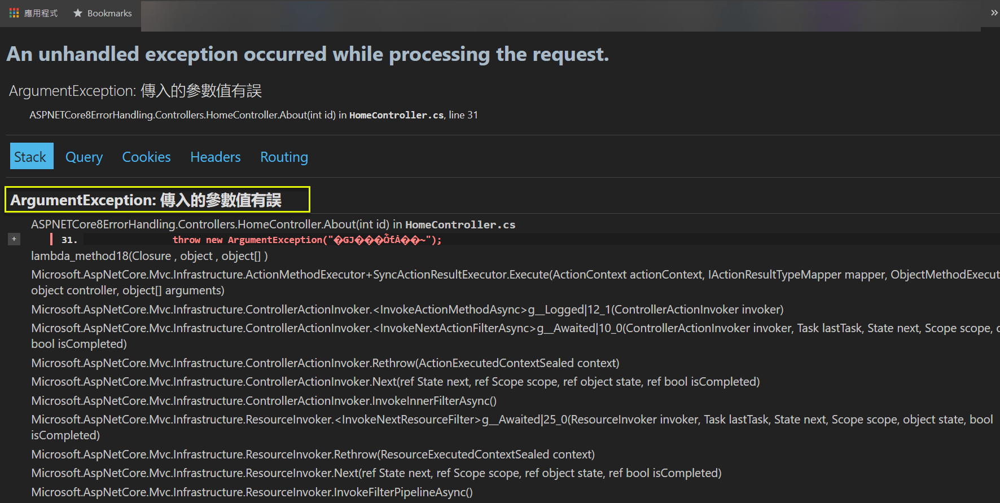
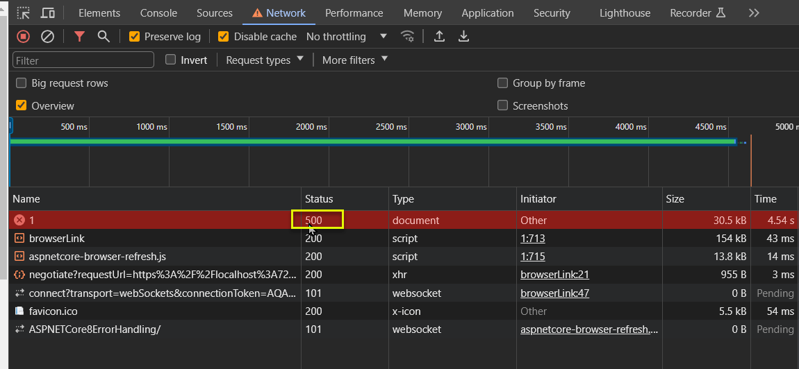
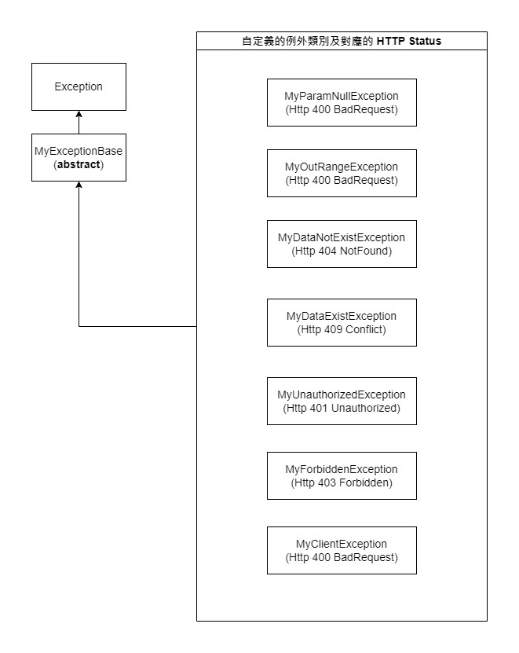
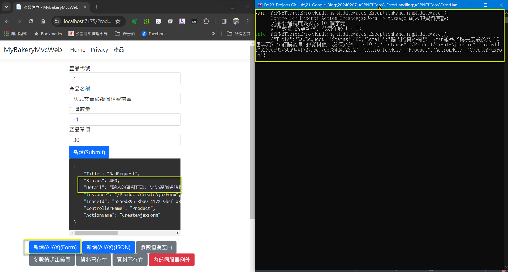
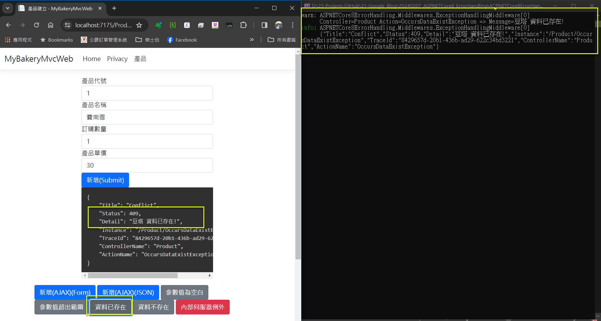

Error Handling in ASP.NET MVC and ASP.NET Core MVC
有效的錯誤處理, 對於確保應用程式的穩定性和用戶體驗, 是非常重要的; 若系統沒有作好錯誤處理, 而呈現程式錯誤細節給使用者, 代表系統不穩定, 且用戶體驗會非常糟糕.
1.. 錯誤(Error): 係指框架 (ASP.NET 或 ASP.NET Core), 或應用程式自定義的例外 (Exception). 本文會說明如何將未通過資料檢核的錯誤, 包裝為自定義用戶端例外拋出. 以提供一致性的錯誤訊息規格.
2.. 錯誤處理(Error Handling): 係指錯誤取得 (Catch), 訊息規格 (Specification), 呈現 (Presentation), 及記錄 (Logging). 本文主要著重在錯誤取得及一致性錯誤訊息規格制訂.
ASP.NET Core 提供了中介軟體 (Middleware) 的機制, 讓開發人員可以在整個 HTTP Request / Response 的過程中, 進行例外的攔截.
MVC 框架本身 (含 ASP.NET MVC 及 ASP.NET Core MVC) 提供了例外過濾器 (Exception Filter) 的機制, 讓開發人員在 HTTP 訊息進入 MVC 的生命週後, 進行例外的攔截.
理解 (Microsoft Learn) Filters in ASP.NET Core 的 2 張圖, 對開發人員而言, 是非常重要的.
若要完全處理整個 Web 應用程式的例外, 實作方面的相關配套如下:
1.. ASP.NET MVC: 要搭配 Web.config 或 Global.asax + 自定義的 ErrorController.
2.. ASP.NET Core MVC: 可以自行撰寫 ASP.NET Core 的例外處理中介軟體 (Middleware).
說明: Middleware 是屬於 ASP.NET Core, 不是 ASP.NET Core MVC; ASP.NET Core MVC 是建置在 ASP.NET Core 上的一個框架.
3.. ASP.NET Core 8 以後提供了實作 IExceptionHandler 介面的方式, 簡化例外處理 Middleware 的撰寫, 內建的 app.UseExceptionHandler(), 其實也是一佪 Middleware, 會使用前述的類別, 攔截例外. 只是筆者能力有限, 目前遇到無法取得 routeData (ex: controller, action 名稱) 的問題, 雖然本文還是有提供範例, 但暫不推薦此方式.
回傳一致性的錯誤訊息, 對於系統的開發及對用戶體驗, 是非常有幫助的.
1.. ASP.NET MVC: 只能自定義錯誤訊息類別.
2.. ASP.NET Core MVC: 可採用自定義錯誤訊息類別, 或內建的 ProblemDetails 類別.
說明: ASP.NET Core 2.1 起, 有一個依 IETF >RFC7807 規範 設計的 ProblemDetails 類別, 用以統一回傳結果. 但也可視需求, 自行定義統一的回傳類別.
說明: 本文採自定義的 ErrorViewModel 類別作為回傳格式, 作為說明之用. 但最後仍補上採用 ProblemDetails 類別的範例.
伺服端程式必須進行資料檢核, 才能去存取資料庫. 若資料檢核發現有誤, 代表用戶端沒有作好資料檢核的工作, 或者被瀏覽器的 F12 破解, 因此屬於用戶端的問題 (HTTP 4XX).
這類的錯誤, 需設計繼承自 Exception 類別的自定義例外類別, 當發生未通過檢核時, 打包為自訂例外拋出, 由前述的 Middleware 或 Exception Filter 攔截及處理.
上述的文字內容的思路, 可參考結論的流程圖.
本文將探討 ASP.NET MVC 及 ASP.NET Core MVC 中一些錯誤處理實作技巧.
一. 預設的錯誤處理方式
二. 自定義統一的回傳的錯誤訊息規格
三. 自定義 Middleware, 用以產生貫穿 Request 軌跡的 TraceId
四. 撰寫 自定義例外 (Custom Exception), 供後續 Middleware 或 Filter 使用
五. 自定義 Middleware 攔截例外 (ASP.NET Core)
六. 建立 Exception Filter (ASP.NET MVC or ASP.NET Core MVC)
七. 實作 IExceptionHandler (ASP.NET Core 8 and later)
八. 建立另一個 MVC 專案, 參考前述的例外處理專案
目前 GitHub 上的範例版本為最後一版, 請下載參考. 輸出結果, 若發現回傳值有 JSON 欄位名稱字首大小寫的差異 (例如: TraceId vs. traceId), 或者有增加欄位 (例如: ControllerName, ActionName), 請再自行參酌程式碼. 前者是因為在輸出 JSON 時, 有對 System.Text.Json 作了一些選項的設定; 後者是因為要寫 Log 時, 需要該欄位.
以下是在只有加上拋出例外程式段的預設狀況.
1.. 加上製造例外的程式段.
只要瀏覽到 ~/Home/About/1 就會發生例外.
public IActionResult About(int id = 0)
{
if (id == 1)
{
_logger.LogError("傳入的參數值有誤");
throw new ArgumentException("傳入的參數值有誤");
}
return View();
}
2.. 預設會有 Middleware 攔截例外, 依是否為 Development 環境有不同的處理方式.
以下 else 的部份, 是筆者自行加上去的, 預設是沒有的, 但有加上會比較清楚.
若不在 Development 環境下, app.UseExceptionHandler("/Home/Error"), 會將錯誤導向 /Home/Error 的頁面.
若是在 Development 環境下, app.UseDeveloperExceptionPage() 錯誤頁面會呈現.
請留意: Error.cshtml 不在 Views/Home, 而是在 Views/Shared 之下.
if (!app.Environment.IsDevelopment())
{
app.UseExceptionHandler("/Home/Error");
app.UseHsts();
}
else
{
app.UseDeveloperExceptionPage();
}
(1) Production 環境下的截圖.
(2) Development 環境下的截圖.

3.. 在 VS 2022 之下, 預設是 Development, 要如何調整成 Production 呢? 請參考下圖.

4.. 在 瀏覽器 可以看到, 是回應 500 Internal Server Error.
按理, 這是客戶端的錯誤, 不應該回傳 HTTP 500, 事實上, 可以把一些檢核錯誤, 轉換為自定義的 Exception 類別, 集中處理.

包含以下欄位, 其中 TraceId 為每次 Http Request 的唯一識別碼, 用以記錄至 Log.
public class ErrorViewModel
{
/// <summary>
/// Http Request 唯一識別碼
/// </summary>
public string? TraceId { get; set; }
/// <summary>
/// HTTP 狀態碼
/// </summary>
public int StatusCode { get; set; } = (int)(HttpStatusCode.OK);
/// <summary>
/// HTTP 狀態碼列舉名稱
/// </summary>
public string StatusCodeName { get; set; } = HttpStatusCode.OK.ToString();
/// <summary>
/// 訊息說明
/// </summary>
public string Message { get; set; } = string.Empty;
public ErrorViewModel() { }
}
1.. 類別本身
public class TraceIdMiddleware
{
private readonly RequestDelegate _next;
public TraceIdMiddleware(RequestDelegate next)
{
_next = next;
}
public async Task InvokeAsync(HttpContext context)
{
context.TraceIdentifier = Guid.NewGuid().ToString();
string traceId = context.TraceIdentifier;
context.Response.Headers["X-Trace-Id"] = traceId;
await _next(context);
}
}
2.. 註冊 (in Program.cs)
#region TraceIdMiddleware
// 註冊自定義 HttpContext.TraceIdentifier 的 Middleware
app.UseMiddleware<TraceIdMiddleware>();
#endregion
撰寫 自定義例外 (Custom Exception), 將一些常見的用戶端錯誤, 通常是將未通過檢核的狀況, 轉換為自定義例外類別, 供程式拋出, 由 Middleware 或 Filter 攔截, 進行集中的處埋.
Custom Exception 類別繼承架構, 如下截圖及程式碼:

/// <summary>
/// 抽象的自定義例外基底類別
/// </summary>
public abstract class MyExceptionBase : Exception
{
protected MyExceptionBase()
{
}
protected MyExceptionBase(string? message) : base(message)
{
}
protected MyExceptionBase(string? message, Exception? innerException)
: base(message, innerException)
{
}
}
#region 此區例外, 將會回傳 HTTP 4XX
/// <summary>
/// 用戶端資料未通過檢核: 發生空值
/// </summary>
/// <remarks>會回傳 HTTP 400 Bad Request</remarks>
public class MyParamNullException : MyExceptionBase
{
public override string Message { get; }
public MyParamNullException(string fieldDescription)
{
this.Message = $"{fieldDescription} 不能為空!";
}
}
/// <summary>
/// 用戶端資料未通過檢核: 超出範圍.
/// </summary>
/// <remarks>會回傳 HTTP 400 Bad Request</remarks>
public class MyOutRangeException : MyExceptionBase
{
public override string Message { get; }
public MyOutRangeException(string fieldDescription)
{
this.Message = $"{fieldDescription} 超出範圍!";
}
}
/// <summary>
/// 用戶端資料未通過檢核: 資料不存在. 通常用在 查詢/更新/刪除
/// </summary>
/// <remarks>會回傳 HTTP 404 Not Found</remarks>
public class MyDataNotExistException : MyExceptionBase
{
public override string Message { get; }
public MyDataNotExistException(string fieldDescription)
{
this.Message = $"{fieldDescription} 資料不存在!";
}
}
/// <summary>
/// 用戶端資料未通過檢核: 資料已存在. 通常用在 新增
/// </summary>
/// <remarks>會回傳 HTTP 409 Conflict</remarks>
public class MyDataExistException : MyExceptionBase
{
public override string Message { get; }
public MyDataExistException(string fieldDescription)
{
this.Message = $"{fieldDescription} 資料已存在!";
}
}
/// <summary>
/// 用戶端資料未通過檢核: 未通過認證及授權
/// </summary>
/// <remarks>會回傳 HTTP 401 Unauthorized</remarks>
public class MyUnauthorizedException : MyExceptionBase
{
public override string Message { get; }
public MyUnauthorizedException()
{
this.Message = $"您未通過認證及授權!";
}
}
/// <summary>
/// 用戶端資料未通過檢核: 無存取此頁面功能的權限
/// </summary>
/// <remarks>會回傳 HTTP 403 Forbidden</remarks>
public class MyForbiddenException : MyExceptionBase
{
public override string Message { get; }
public MyForbiddenException()
{
this.Message = $"您無存取此頁面功能的權限!";
}
}
/// <summary>
/// 用戶端資料未通過檢核: 其它狀況
/// </summary>
/// <seealso cref="ASPNETCore8ErrorHandling.Filters.MyExceptionBase" />
/// <remarks>會回傳 HTTP 400 Bad Request</remarks>
public class MyClientException : MyExceptionBase
{
public override string Message { get; }
public MyClientException(string description)
{
this.Message = $"{description}";
}
}
#endregion
本章節所撰寫的程式碼, 與 GitHub 的最後版本有不同, 但仍可自行實作測試.
1.. 修改 HomeController.cs 的 About() method, 改為抛出 MyClientException
public IActionResult About(int id = 0)
{
if (id == 1)
{
_logger.LogError("傳入的參數值有誤");
throw new MyClientException("傳入的參數值有誤");
}
return View();
}
2.. 撰寫自定義的例外處理 Middleware
public class ExceptionHandlingMiddleware
{
private readonly RequestDelegate _next;
private readonly ILogger<ExceptionHandlingMiddleware> _logger;
public ExceptionHandlingMiddleware(RequestDelegate next, ILogger<ExceptionHandlingMiddleware> logger)
{
_next = next;
_logger = logger;
}
public async Task InvokeAsync(HttpContext context)
{
try
{
await _next(context);
}
catch (Exception ex)
{
await HandleExceptionAsync(context, ex);
}
}
private async Task HandleExceptionAsync(HttpContext context, Exception exception)
{
// 取得 REQUEST 的唯一識別碼
var traceId = context.TraceIdentifier;
_logger.LogError(exception, "traceId={traceId} --> An unexpected error occurred.", traceId);
ErrorViewModel response = exception switch
{
ApplicationException _ => new ErrorViewModel()
{ TraceId = traceId, StatusCode = (int)HttpStatusCode.BadRequest, StatusCodeName = HttpStatusCode.BadRequest.ToString(), Message = "用戶端傳送資料有誤" },
UnauthorizedAccessException _ => new()
{ TraceId = traceId, StatusCode = (int)HttpStatusCode.Unauthorized, StatusCodeName = HttpStatusCode.Unauthorized.ToString(), Message = "未通過認證授權" },
_ => new()
{ TraceId = traceId, StatusCode = (int)HttpStatusCode.InternalServerError, StatusCodeName = HttpStatusCode.InternalServerError.ToString(), Message = "伺服器發生未預期的錯誤" },
};
context.Response.ContentType = "application/json";
context.Response.StatusCode = (int)response.StatusCode;
await context.Response.WriteAsJsonAsync(response);
}
}
3.. 註冊定義的例外處理 Middleware
// Configure the HTTP request pipeline.
if (!app.Environment.IsDevelopment())
{
app.UseExceptionHandler("/Home/Error");
// The default HSTS value is 30 days. You may want to change this for production scenarios, see https://aka.ms/aspnetcore-hsts.
app.UseHsts();
}
else
{
app.UseDeveloperExceptionPage();
}
// 註冊自定義產出 TraceId 的 Middleware
app.UseMiddleware<TraceIdMiddleware>();
// 註冊例外攔截的 Middleware
// 注意: 這個必須排在預設內建的例外處理機制之後, 在發生例外時, 才能由自定義的 Middleware 作處理
app.UseMiddleware<ExceptionHandlingMiddleware>();
~/Home/About/1 會抛出 MyClientException, 但在前述的 ExceptionHandlingMiddleware 沒有特別攔截該項目, 而轉成 Http 500: InternalServerError.
1.. Request:
https://localhost:7244/Home/About/1
2.. Response:
{
traceId: "ec45159d-1ab9-4596-842e-faede72327c7",
statusCode: 500,
statusCodeName: "InternalServerError",
message: "伺服器發生未預期的錯誤"
}
Exception Filter 在 ASP.NET 時代的 MVC 就有了, 是內建於 MVC 的一個錯誤處理機制.
參考文件11.. 及 參考文件12.. 有建議採用 IExceptionHandler (ASP.NET Core 8 and later) 或自定義的 Middlewae (ASP.NET Core) 作全域錯誤的攔截, 而不要採用 MVC 本身的 Exception Filter.
但因為在 ASP.NET Core 以前, 大部份都是用這個方式作 MVC 錯誤攔截, 故還是提一下實作方式.
1.. 建立 Exception Filter
public class MyExceptionFilter : IExceptionFilter
{
private readonly ILogger<MyExceptionFilter> _logger;
public MyExceptionFilter(ILogger<MyExceptionFilter> logger)
{
_logger = logger;
}
public void OnException(ExceptionContext context)
{
// STEP 1: 建立回傳物件
var exception = context.Exception;
var traceId = context.HttpContext.TraceIdentifier; // 這個已經被 middleware 改成 GUID
ErrorViewModel result = exception switch
{
MyParamNullException _ or
MyOutRangeException _ or
MyClientException _ => new ErrorViewModel()
{ TraceId = traceId, StatusCode = (int)HttpStatusCode.BadRequest, StatusCodeName = HttpStatusCode.BadRequest.ToString(), Message = exception.Message },
MyDataNotExistException _ => new ErrorViewModel()
{ TraceId = traceId, StatusCode = (int)HttpStatusCode.NotFound, StatusCodeName = HttpStatusCode.NotFound.ToString(), Message = exception.Message },
MyDataExistException _ => new ErrorViewModel()
{ TraceId = traceId, StatusCode = (int)HttpStatusCode.Conflict, StatusCodeName = HttpStatusCode.Conflict.ToString(), Message = exception.Message },
MyUnauthorizedException _ => new ErrorViewModel()
{ TraceId = traceId, StatusCode = (int)HttpStatusCode.Unauthorized, StatusCodeName = HttpStatusCode.Unauthorized.ToString(), Message = exception.Message },
MyForbiddenException _ => new ErrorViewModel()
{ TraceId = traceId, StatusCode = (int)HttpStatusCode.Forbidden, StatusCodeName = HttpStatusCode.Forbidden.ToString(), Message = exception.Message },
_ => new()
{ TraceId = traceId, StatusCode = (int)HttpStatusCode.InternalServerError, StatusCodeName = HttpStatusCode.InternalServerError.ToString(), Message = "伺服器發生未預期的錯誤" },
};
// STEP 2: 設定已處理例外, 不再往外拋出
context.ExceptionHandled = true;
// STEP 3: 回傳結果 (JSON 格式)
context.Result = new JsonResult(result)
{
StatusCode = result.StatusCode // Optionally set the status code of the HTTP response
};
// STEP 4: 寫入至 Log
if (result.StatusCode >= 400 && result.StatusCode < 500 )
_logger.LogWarning(exception.Message);
if (result.StatusCode >= 500)
_logger.LogError(exception.Message);
}
}
2.. 註冊 Exception Filter.
var builder = WebApplication.CreateBuilder(args);
// {jasper} 註冊全域的 Exception Filter
builder.Services.AddScoped<MyExceptionFilter>();
builder.Services.AddControllersWithViews(options =>
{
options.Filters.AddService<MyExceptionFilter>();
});
var app = builder.Build();
~/Home/About/1 會抛出 MyClientException, 會被 MyExceptionFilter 攔截到, 而轉成 Http 400: BadRequest
{
traceId: "0a3a3c93-7dab-4e80-9cfc-45c4b5300f5e",
statusCode: 400,
statusCodeName: "BadRequest",
message: "傳入的參數值有誤"
}
如同在前言所述的, 這個功能看來還是有一些問題, 筆者不推薦使用; 而是建議採 自定義 Middleware + ProblemDetails 類別. GitHub 上的程式版本, 即採用此方式.
IExceptionHandler 是 ASP.NET Core 8 新增加的介面. 該介面的實作類別, 會被內建的 app.UseExceptionHandler() 叫用.
需留意 ASP.NET Core 有提供一個 StatusCodes class, 與 HttpStatusCode enum 有所不同, 細節參考 [補充] 章節.
public class GlobalExceptionHandler : IExceptionHandler
{
private readonly ILogger<GlobalExceptionHandler> _logger;
public GlobalExceptionHandler(ILogger<GlobalExceptionHandler> logger)
{
_logger = logger;
}
#region 方式一: 回傳自定義的錯誤類別
public async ValueTask<bool> TryHandleAsync(
HttpContext context,
Exception exception,
CancellationToken cancellationToken)
{
// STEP 1: 建立回傳物件
var traceId = context.TraceIdentifier; // 這個已經被 middleware 改成 GUID
ErrorViewModel result = exception switch
{
MyParamNullException _ or
MyOutRangeException _ or
MyClientException _ => new ErrorViewModel()
{ TraceId = traceId, StatusCode = (int)HttpStatusCode.BadRequest, StatusCodeName = HttpStatusCode.BadRequest.ToString(), Message = exception.Message },
MyDataNotExistException _ => new ErrorViewModel()
{ TraceId = traceId, StatusCode = (int)HttpStatusCode.NotFound, StatusCodeName = HttpStatusCode.NotFound.ToString(), Message = exception.Message },
MyDataExistException _ => new ErrorViewModel()
{ TraceId = traceId, StatusCode = (int)HttpStatusCode.Conflict, StatusCodeName = HttpStatusCode.Conflict.ToString(), Message = exception.Message },
MyUnauthorizedException _ => new ErrorViewModel()
{ TraceId = traceId, StatusCode = (int)HttpStatusCode.Unauthorized, StatusCodeName = HttpStatusCode.Unauthorized.ToString(), Message = exception.Message },
MyForbiddenException _ => new ErrorViewModel()
{ TraceId = traceId, StatusCode = (int)HttpStatusCode.Forbidden, StatusCodeName = HttpStatusCode.Forbidden.ToString(), Message = exception.Message },
_ => new()
{ TraceId = traceId, StatusCode = (int)HttpStatusCode.InternalServerError, StatusCodeName = HttpStatusCode.InternalServerError.ToString(), Message = "伺服器發生未預期的錯誤" },
};
// STEP 2: 設定回傳的 response header
context.Response.StatusCode = result.StatusCode;
// STEP 3: 寫入至 Log
if (result.StatusCode >= 400 && result.StatusCode < 500)
_logger.LogWarning(exception.Message);
if (result.StatusCode >= 500)
_logger.LogError(exception, exception.Message);
// STEP 4: 回傳結果
await context.Response
.WriteAsJsonAsync(result, cancellationToken);
// STEP 5: 設定已處理例外, 不再往外拋出
return true;
}
#endregion
}
public class GlobalExceptionHandler : IExceptionHandler
{
private readonly ILogger<GlobalExceptionHandler> _logger;
public GlobalExceptionHandler(ILogger<GlobalExceptionHandler> logger)
{
_logger = logger;
}
#region 方式二: 回傳 ASP.NET Core 內建的 ProblemDetails 類別
public async ValueTask<bool> TryHandleAsync(
HttpContext context,
Exception exception,
CancellationToken cancellationToken)
{
// STEP 1: 建立回傳物件
var traceId = context.TraceIdentifier;
ProblemDetails problemDetails = exception switch
{
MyParamNullException _ or
MyOutRangeException _ or
MyClientException _ => new ProblemDetails()
{
Title = HttpStatusCode.BadRequest.ToString(),
Status = StatusCodes.Status400BadRequest,
},
MyDataNotExistException _ => new ProblemDetails()
{
Title = HttpStatusCode.NotFound.ToString(),
Status = StatusCodes.Status404NotFound,
},
MyDataExistException _ => new ProblemDetails()
{
Title = HttpStatusCode.Conflict.ToString(),
Status = StatusCodes.Status409Conflict,
},
MyUnauthorizedException _ => new ProblemDetails()
{
Title = HttpStatusCode.Unauthorized.ToString(),
Status = StatusCodes.Status401Unauthorized,
},
MyForbiddenException _ => new ProblemDetails()
{
Title = HttpStatusCode.Forbidden.ToString(),
Status = StatusCodes.Status403Forbidden,
},
_ => new()
{
Title = HttpStatusCode.InternalServerError.ToString(),
Status = StatusCodes.Status500InternalServerError,
}
};
if (problemDetails.Status != StatusCodes.Status500InternalServerError)
problemDetails.Detail = exception.Message;
else
problemDetails.Detail = "伺服器發生未預期的錯誤";
problemDetails.Instance = context.Request.Path;
problemDetails.Extensions.Add("traceId", traceId);
// STEP 2: 設定回傳的 response header
context.Response.StatusCode = problemDetails.Status ?? StatusCodes.Status500InternalServerError;
// STEP 3: 寫入至 Log
if (problemDetails.Status >= 400 && problemDetails.Status < 500)
_logger.LogWarning("{ExceptionMessage}", exception.Message);
if (problemDetails.Status >= 500)
_logger.LogError(exception, "{ExceptionMessage}", exception.Message);
// STEP 4: 回傳結果
await context.Response
.WriteAsJsonAsync(problemDetails, cancellationToken);
// STEP 5: 設定已處理例外, 不再向外拋出
return true;
}
#endregion
}
修訂 Program.cs 的內容.
#region 註冊 GlobalExceptionHandler 及 ProblemDeatils 至 DI
builder.Services.AddExceptionHandler<GlobalExceptionHandler>();
builder.Services.AddProblemDetails();
#endregion
#region 使用內建的 ExceptionHandler
app.UseExceptionHandler();
#endregion
1.. 自定義的 ErrorViewModel 類別.
{
traceId: "d1d2538c-e27b-4ff7-b1a0-fcf653363377",
statusCode: 400,
statusCodeName: "BadRequest",
message: "傳入的參數值有誤"
}
2.. ASP.NET Core 內建的 ProblemDetails 類別.
{
title: "BadRequest",
status: 400,
detail: "傳入的參數值有誤",
instance: "/Home/About/1",
traceId: "4bbf5f78-cacd-4033-80bf-b3fd37a03bcb"
}
1.. 加入一個 MVC 專案: MyBakeryMvcWeb
2.. 加入 ProductController / ProductService 及 相關的 View (.cshtml)
3.. 加入專案參考: ASPNETCore8ErrorHandling
4.. 執行 MyBakeryMvcWeb 看看, 會發生以下例外.
AmbiguousMatchException: The request matched multiple endpoints. Matches: MyBakeryMvcWeb.Controllers.HomeController.Index (MyBakeryMvcWeb) ASPNETCore8ErrorHandling.Controllers.HomeController.Index (ASPNETCore8ErrorHandling)
解決方式: 在 ASPNETCore8ErrorHandling HomeController 加上 route attribute; 如果要單獨執行 ASPNETCore8ErrorHandling 的話, 要把那個 route attribute 註解掉.
[Route("ASPNETCore8ErrorHandling/[controller]/[action]")]
5.. 輸入資料檢核的部份:
(1) 在 Action 將 ModelErrors 轉成字串, 包在 MyClientException 的 description 參數, 以統一處理.
[HttpPost]
public IActionResult CreateAjaxJson([FromBody] ProductViewModel product)
{
// 處理 validation attribute (model binding) 檢核未過的錯誤
if (!ModelState.IsValid)
{
var description = this.ModelErrorToString();
throw new MyClientException(description);
}
var result = _service.Create(product);
_logger.LogInformation("處理結果: {result}", result);
return View("Create",product);
}
(2) 輸出的JSON內容.
{
"Title": "BadRequest",
"Status": 400,
"Detail": "輸入的資料有誤: \r\n產品名稱必須在 2 ~ 10 個字元之間\r\n訂購數量 的資料值, 必須介於 1 ~ 10.",
"Instance": "/Product/CreateAjaxJson",
"TraceId": "06a4755f-bbe5-4fc8-a8e3-e1206029fe26",
"ControllerName": "Product",
"ActionName": "CreateAjaxJson"
}
6.. 修改 Create.cshtml: 完成所需的例外功能測試項目 button.
以下僅列出一些實測截圖. 有興趣可以自行實測看看.
1.. Model Validation Error 截圖 
2.. 自定義 Exception 截圖

3.. Internal Server Error 截圖

本篇整個思路架構如下圖, 黃底為筆者建議的實作方式, 供參考.

ASP.NET Core 的 Middleware 可以取代原本 MVC 的 Exception Filter 的功能, 涵蓋的範圍也更大. 亦即, 在 ASP.NET Core 的環境下, 只要實作 Middleware, 而不需實作 Exception Filter. 所以, 上圖在 ASP.NET Core 的環境下, Exception Filter 沒有被標記為黃底.
如筆者在前言所述, 如有發生例外時, 一般都會有記錄 controller 及 action 的需求, 因為筆者實測 ASP.NET Core 8 IExceptionHandler 的方式時, 會取不到 HttpContext 的路由資料 (RouteData), 故建議採用 自定義的例外處理 Middleware 的方式.
筆者有在 Stackflow 提問, 但不確定是否能得到解答, 有興趣的朋友, 可以關注一下那則討論.
這篇描述 ASP.NET Core Filters 的流程. 有 2 張重要的圖, 節錄如下:


ASP.NET Core 的錯誤處理: 主要針對 ASP.NET Core MVC
ASP.NET Core Web APIs 的錯誤處理
4.. (Andy) ASP.NET Core Middleware: Working with Global Exception Handling
5.. (StackOverflow) TraceId, RequestId, and TraceIdentifier in ASP.NET Core
有提到一個例子, 若 traceparent: 00-0af7651916cd43dd8448eb211c80319c-b7ad6b7169203331-01, 則
Activity.TraceId: 0af7651916cd43dd8448eb211c80319c
Activity.SpanId: 04dcdddd4175b2a4
Activity.TraceFlags: Recorded
Activity.ParentSpanId: b7ad6b7169203331
Activity.ActivitySourceName: Microsoft.AspNetCore
這篇有詢問 HttpContext.TraceIdentifier vs Activity.Current.Id 的差異, 及寫入 Log 時, 應該要用那一個. 但沒有得到解答.
這篇有提到利用自定義的 Middleware, 將預設由 Kestrel 產生的 TraceIdentifier /* 格式: {ConnectionId}:{Request number}, 範例: 0HLEACIU86PT7:00000005 */, 改採自行產生的 GUID 進行規換.
有人回覆, 可以採用 OpenTelemetry (GitHub) OpenTelemetry .NET, 這個有空再試.
這篇有提到自訂 Exception 序列化及反序列化舊有作法已過時的問題.
這篇有列出 HTTP Status Code.
Prefer middleware for exception handling.
Use exception filters only where error handling differs based on which action method is called.
12.. (Milan Jovanovic) Global Error Handling in ASP.NET Core 8
13.. (Medium)(Mustafa Bekta) Exception Handling Using Filters in ASP.NET Core
14-1.. (jasper) Cannot get routeData in IExceptionHandler.TryHandleAsync() for ASP.NET Core 8
14-2.. (jasper) Cannot get routeData in IExceptionHandler.TryHandleAsync() for ASP.NET Core 8
14-4.. (jasper) sample code repository for trying IExceptionHandler
對於 ajax post JSON 資料而言, 在 MVC action 的參數, 必須加上 [FromBody] 的 binding attribute, 不然會 binding 不上.
1.. TraceIdentifier 是 HttpContext 的一個屬性.
2.. Activity 是 System.Diagnostics.Activity 類別, 其結果比較像是 參考文件5.. traceparent 的內容.
TraceId: 0HN1APF86O2TV:0000000F
TraceId 長度: 22 bytes
Activity.Current.Id: 00-32c459d1987952263b28b9017dcb2b21-b2567a901e07ad79-00
Activity.Current.Id 長度: 55 bytes
(3) 觀察多個 Chrome 之下, 其 TraceId 的前半部是相同的 "0HN1APF86O2TV" (這個即 HttpContext.Connection.Id 的值), 只有 "0000000F" 會異動.
(4) 參考文件8.. 有提到, 預設由 Kestrel 產生的 TraceIdentifier, 格式: {ConnectionId}:{Request number}, 範例: 0HLEACIU86PT7:00000005; 改採自行產生的 GUID 進行規換. 這樣可以比較容易確保唯一性.
1.. StatusCodes 是 Microsoft.AspNetCore.Http 命名空間中的類別, 提供 HTTP 狀態碼的常數, 通常用於 ASP.NET Core 應用程序中直接設置 HTTP Response 狀態碼.
2.. HttpStatusCode 是 System.Net 命名空間中的列舉, 用於在 .NET 應用程序中以更結構化的方式處理 HTTP Response 狀態碼.